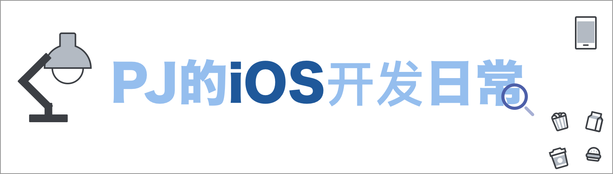

🤘 前言
这是我在学习iOS开发相关内容过程中的总结，包括在日常coding、工作中、灵光一闪后的想法实践等都会在此进行分析总结。因为自己的时间关系，很多想要总结出来的内容往往会拖延一段时间才正式完成， 👨🏻💻 表示近期正在更新，⏳ 表示暂停更新，其它均为编写完成。
欢迎star、fork、PR。一篇老文，当初开这个库时的一些想法。
🏯 文化
| 类型 | 文章 |
|---|---|
| Apple Company | 苹果公司的历史 |
| macOS | macOS的历史 |
| iOS | iOS的历史 |
🌈 基础知识
| 类型 | 文章 |
|---|---|
| 网络 | ⏳ 网络相关知识 |
| 操作系统 | ⏳ 操作系统相关知识 |
| 算法 & 数据结构 | ⏳ algorithm - java |
| 算法 & 数据结构 | ⏳ nowCoder |
| 算法 & 数据结构 | ⏳ LeetCode |
| 语言 | ⏳ C++ |
| 语言 | 👨🏻💻 Python |
| UML | 👨🏻💻 UML |
iOS
| 类型 | 文章 |
|---|---|
| 基础知识 | 基础知识 |
| Swift | 👨🏻💻 OC 转 Swift 注意点 |
| Swift | 👨🏻💻 Swift 注意点 |
| Swift | Swift 构造器 |
| Objective-C | 👨🏻💻 Objective-C 注意点 |
| animation & UIKit | More - 弹幕 |
| UITableView | ⏳ UITableView 相关使用总结 |
| UICollectionView | ⏳ UICollectionView 相关使用总结 |
| Today Extension | ⏳ Today Extension |
| Objective-C & Swift | ⏳ 并发编程 |
| Objective-C | More - 页面传值 |
| Objective-C | 一个 Ping 工具 |
| Objective-C | More - iOS 上的相机 |
| Objective-C | More - iOS 国际化一站式解决方案 |
| Objective-C | More - 设计模式 |
| Objective-C | More - 音频相关 |
| Objective-C | More - 视频相关 |
| Objective-C | ⏳ runtime |
| Swift & Objective-C | 👨🏻💻 系统相关 |
| Swift | tips-自定义tabBar大加号引发的思考 |
| Swift | ⏳ Cache |
| Swift & Objective-C | ⏳ 自定义NavigationBar |
| Swift | PJBreedsViewController 开发总结 |
| Swift | PJPickerView 开发总结 |
| Swift | PhotosKit开发总结（一） |
| 基础知识 | 👨🏻💻 Layout |
💻 macOS
| 类型 | 文章 |
|---|---|
| 编译原理 | macOS开发（词法分析器） |
| git | 一台设备多个git账号 |
| Crash | 解析 crash log（一） |
| Playground | 来一次完整的使用 Playground（一） |
Android
| 类型 | 文章 |
|---|---|
| 基础 | 基础知识 |
| 基础 | 问题汇总 |
🗄 Back - end
| 类型 | 文章· |
|---|---|
| 总结 | 👨🏻💻 后端相关知识总结 |
| Django | 👨🏻💻 Django学习 |
| Web | Web 服务器 |
| RESTful | 👨🏻💻 RESTful |
| Docker | 👨🏻💻 Docker |
| Mysql | 👨🏻💻 Mysql |
| Vapor | 👨🏻💻 Vapor |
📃 Front - end
| 类型 | 文章 |
|---|---|
| 总结 | 👨🏻💻 前端学习总结 |
| 总结 | ⏳ 图解HTTP学习笔记 |
| 总结 | 👨🏻💻 FCC 学习笔记 |
| JS | 👨🏻💻 JavaScript 学习笔记 |
| CSS | 👨🏻💻 CSS 学习笔记 |
| 总结 | 使用 Vue 实现 Context-Menu 的思考与总结 |
| 总结 | 👨🏻💻 Vue 学习笔记 |
🦋 Flutter
| 类型 | 文章 |
|---|---|
| Dart | Dart 学习 |
| Flutter | Flutter 问题汇总 |
| Flutter | Flutter 二探 |
| Flutter | Flutter 三探 |
🦖 React-Native
| 类型 | 文章 |
|---|---|
| React-Native | React-Native记（〇） |
| React-Native | React-Native记（一） |
| React-Native | React-Native记（二） |
🦕 Weex
| 类型 | 文章 |
|---|---|
| Weex | Weex新手记 |
🐬 小程序
| 类型 | 文章 |
|---|---|
| 小程序 | 小程序初探 |
| 小程序 | 小程序初探（二） |
Cocos
Game/Cocos/basic.md
📐 测试
单元测试 | 👨🏻💻 iOS 中的单元测试
📖 书籍
| 类型 | 文章 |
|---|---|
| 面试 | iOS 面试之道 |
📚 教程
| 类型 | 文章 |
|---|---|
| 新生实践 | 剪刀石头布 |
🛠 相关工具使用
| 类型 | 文章 |
|---|---|
| 杂烩 | 百家汇 |
| GitHub | GitHub |
| Xcode | Xcode |
🐾 其它
| 类型 | 文章 |
|---|---|
| 工作 | 面试准备 |
| 工作 | 招一个靠谱的iOS实习生（附参考答案） |
| 链接 | 开发中可能会用到的 |
| 笔记 | ⏳ 图解 HTTP 学习笔记 |
| 笔记 | coding-interview-university学习笔记 |
| 源码分析 | ONEUIKit-ONEProgressHUD |
| 翻译 | Views programming Guide for iOS |
| 总结 | 我的大学——实习生涯 |
🏗 项目
| 类型 | 文章 |
|---|---|
| 项目管理 | ⏳ 第三方库管理 |
| 上架 | ⏳ 上架的相关内容· |
| PLook | ⏳ PFollow 开发相关问题汇总 |
| PLook | PLook 开发相关问题汇总 |
| Bonfire | Bonfire 开发相关问题汇总 |
| iBistu | iBistu 4.0开发总结（先导篇） |
| iBistu | iBistu 4.0开发总结（新闻） |
| iBistu | iBistu 4.0开发总结（黄页） |
| iBistu | iBistu 4.0开发总结（地图） |
| iBistu | iBistu 4.0开发总结（失物） |
| Cocos Creator | CocosCreator - 方块弹球 |